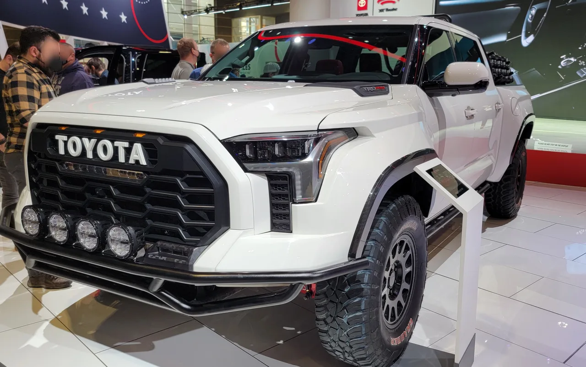
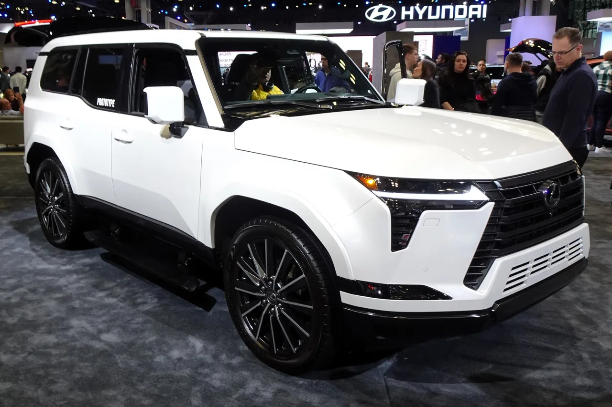
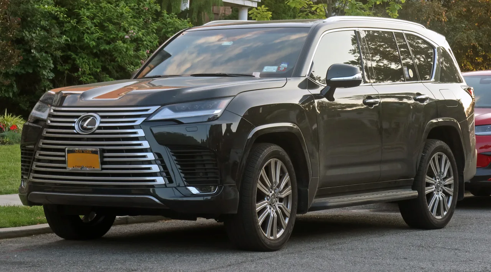

▲ 토요타 툰드라 하이브리드(i-FORCE MAX). V6 트윈터보 엔진 결함 리콜에서 유일하게 제외된 파워트레인이다
토요타가 3차례에 걸쳐 진행한 V6 트윈터보 엔진 리콜로 27만대 이상이 영향을 받았습니다. 대상은 2022~2024년식 토요타 툰드라와 렉서스 LX 600, 렉서스 GX에 이릅니다. 그런데 같은 차체, 같은 세대를 쓰면서도 유독 하이브리드 트림인 i-FORCE MAX만은 이 리콜 대상에서 빠졌습니다.
1. 가공 잔해가 만든 27만대 리콜
문제의 근원은 V35A-FTS 3.4리터 트윈터보 V6 엔진의 제조 과정에 있었습니다. 엔진 생산 중 발생한 기계 가공 잔해가 완전히 제거되지 않고 내부에 남아, 이 잔해가 '#1 크랭크샤프트 메인 베어링'으로 흘러들어갔습니다. 지속적인 부하가 걸리는 주행 상황에서 이 잔해가 베어링 표면을 손상시키며 압력 분산을 불균등하게 만들고, 최악의 경우 엔진 전체 고장으로 이어질 수 있다는 것이 리콜의 핵심 사유입니다. 외부 전문가들은 여기에 더해 베어링 표면의 미세한 오일 막이 훼손되는 구조적 문제도 지적했습니다.

▲ 토요타 툰드라 TRD 프로. 가솔린 V6 트윈터보 모델로, 27만대 규모 리콜의 대상에 포함됐다
2. 툰드라만이 아니다 — LX·GX까지 번진 리콜
이번 리콜의 범위는 픽업트럭 툰드라에 그치지 않습니다. 같은 V35A-FTS 엔진을 공유하는 렉서스 LX 600과 렉서스 GX도 함께 리콜 대상에 올랐습니다. 토요타·렉서스 그룹 내에서 이 엔진을 쓰는 차종 전체가 영향권에 들어간 셈입니다. 리콜은 세 차례에 걸쳐 순차적으로 확대됐습니다. 2024년 5월 2022~2023년식을 대상으로 1차 리콜이 시작됐고, 약 1년 뒤 2024년식까지 포함하며 2차로 확대됐습니다. 이후 2026년 5월 진행된 3차 리콜에서 추가 차량이 더해지며 최종적으로 27만대를 넘어섰습니다. 초기 파악보다 결함 범위가 계속 넓어졌다는 뜻입니다.
| 항목 | 내용 |
|---|---|
| 리콜 대수(누적) | 27만대 이상 |
| 대상 엔진 | V35A-FTS 3.4L 트윈터보 V6 |
| 대상 차종 | 툰드라, 렉서스 LX 600, 렉서스 GX |
| 대상 연식 | 2022~2024년식 |
| 제외 트림 | 하이브리드 i-FORCE MAX |

▲ 렉서스 GX 550. 3.4리터 트윈터보 V6 354마력 엔진을 얹은 모델로, 툰드라와 같은 엔진 결함으로 리콜 대상에 포함됐다
3. 왜 하이브리드만 안전할까
유일하게 리콜을 피한 i-FORCE MAX 하이브리드의 비결은 전기모터에 있습니다. 하이브리드 시스템의 전기모터가 크랭크샤프트 메인 베어링에 걸리는 부하를 일부 분담하면서, 결함이 있는 베어링이라도 고장으로 이어질 위험이 상대적으로 낮아진다는 것이 토요타 측 설명입니다. 실제로 토요타가 미국 도로교통안전국(NHTSA)에 제출한 신청서에는, i-FORCE MAX 모델의 경우 설령 가솔린 엔진에 문제가 생기더라도 전기 동력만으로 제한된 거리를 계속 주행할 수 있는 구조라는 점도 근거로 제시됐습니다.

▲ 렉서스 LX 600. 툰드라와 같은 V35A-FTS 엔진을 사용해 리콜 대상에 함께 포함됐다
4. 정리 — 하이브리드가 예상치 못한 안전판이 되다
이번 리콜 사례는 흥미로운 시사점을 남깁니다. 하이브리드 시스템이 원래는 연비 개선을 위해 도입됐지만, 결과적으로 엔진 결함이라는 예상치 못한 위험까지 완화하는 부수 효과를 냈다는 점입니다. 가솔린 전용 모델을 보유한 소비자라면 토요타 공식 리콜 대상 여부를 차대번호로 확인하고, 무상 점검·수리를 받아야 합니다. 반대로 i-FORCE MAX 하이브리드 소유자는 이번 리콜에서는 안심해도 되지만, 향후 다른 방식의 결함이 발견될 가능성까지 완전히 배제할 수는 없는 만큼 정기 점검은 계속 유지하는 것이 안전합니다.